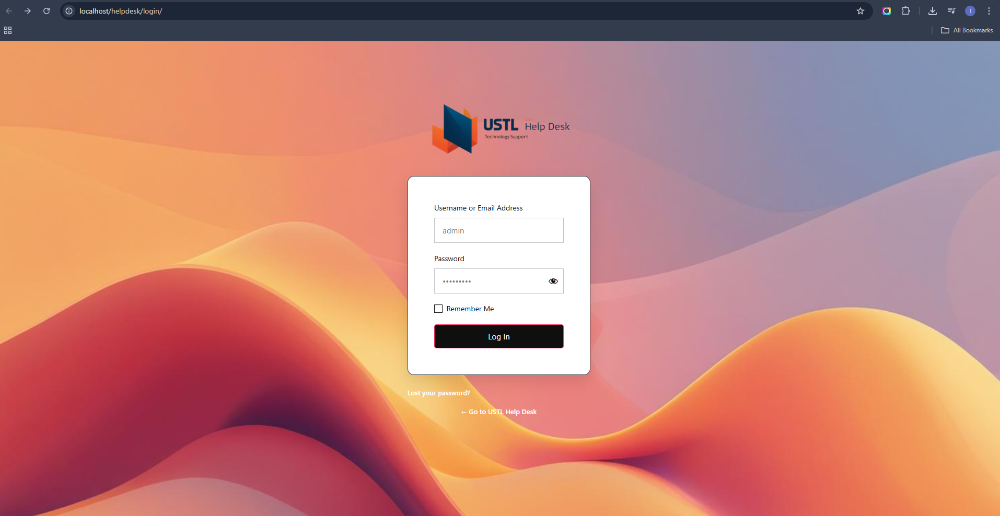
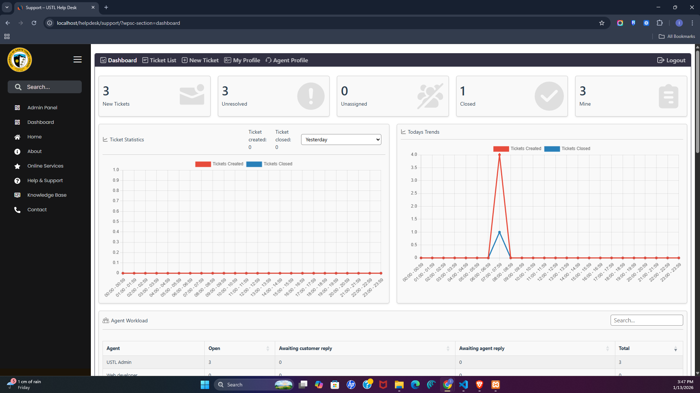
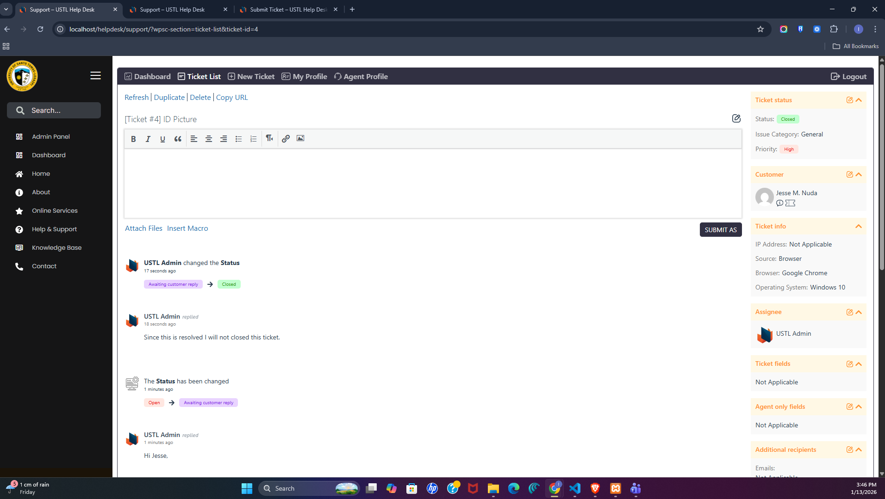
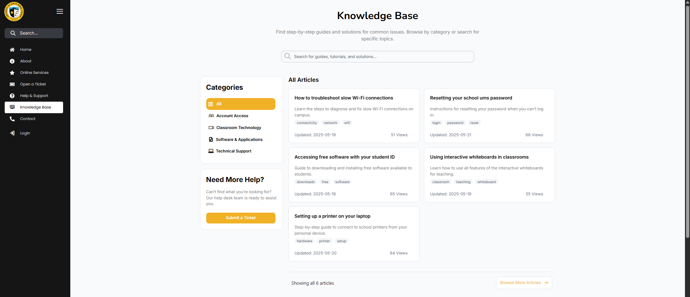

🎓 USTL Help Desk Portal
A centralized IT support system built for the University of Santo Tomas-Legazpi.
Streamlining technical assistance with a structured, automated ticketing workflow.

A centralized IT support system built for the University of Santo Tomas-Legazpi.
Streamlining technical assistance with a structured, automated ticketing workflow.
User Login Portal |
Admin Dashboard |
Ticket Management |
Knowledge Base |
Developed by Lance Esureña